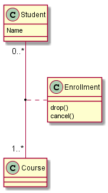

Class Diagram
To be able to generate those diagrams, you must have Graphviz
software installed on your machine in the default directory c:\Program
Files\GraphvizX.XX or /usr/bin/dot.
You can have a look here if you have
installed Graphviz somewhere else.
The description of class diagram is similar to the description of
use case diagrams.
New rendering
This page show the rendering given by the new Svek architecture.
Note that you can disable the shadowing using the skinparam shadowing false command.
Relations between classes
Relations between classes are defined using the following symbols :
It is possible to replace -- by .. to have a dotted
line.
Knowing those rules, it is possible to draw the following drawings:
@startuml
scale 800 width
Class01 <|-- Class02
Class03 *-- Class04
Class05 o-- Class06
Class07 .. Class08
Class09 -- Class10
Class11 <|.. Class12
Class13 --> Class14
Class15 ..> Class16
Class17 ..|> Class18
Class19 <--* Class20
@enduml
|
|
Label on relations
It is possible a add a label on the relation, using ":", followed
by the text of the label.
For cardinality, you can use double-quotes "" on each side
of the relation.
@startuml
Class01 "1" *-- "many" Class02 : contains
Class03 o-- Class04 : aggregation
Class05 --> "1" Class06
@enduml
|
|
You can add an extra arrow pointing at one object showing
which object acts on the other object, using < or >
at the begin or at the end of the label.
@startuml
class Car
Driver - Car : drives >
Car *- Wheel : have 4 >
Car -- Person : < owns
@enduml
|
|
Adding methods
To declare fields and methods, you can use the symbol
":" followed by the field's or method's name.
The system checks for parenthesis to choose between methods and fields.
@startuml
Object <|-- ArrayList
Object : equals()
ArrayList : Object[] elementData
ArrayList : size()
@enduml
|
|
It is also possible to group between brackets
{} all fields and methods.
Note that the syntax is highly flexible about type/name order.
@startuml
class Dummy {
String data
void methods()
}
class Flight {
flightNumber : Integer
departureTime : Date
}
@enduml
|
|
Defining visibility
When you define methods or fields, you can use characters to define the
visibility of the corresponding item:
| Character |
Icon for field |
Icon for method |
Visibility |
- |
|
|
private |
# |
|
|
protected |
~ |
|
|
package private |
+ |
|
|
public |
@startuml
class Dummy {
-field1
#field2
~method1()
+method2()
}
@enduml
|
|
You can turn off this feature using the
skinparam classAttributeIconSize 0 command :
@startuml
skinparam classAttributeIconSize 0
class Dummy {
-field1
#field2
~method1()
+method2()
}
@enduml
|
|
Abstract and Static
You can define static or abstract methods or fields using the {static}
or {abstract} modifier.
These modifiers can be used at the start or at the end of the line.
You can also use {classifier} instead of {static}.
@startuml
class Dummy {
{static} String id
{abstract} void methods()
}
@enduml
|
|
Advanced class body
By default, methods and fields are automatically regrouped by PlantUML.
You can use separators to define your own way of ordering fields and methods.
The following separators are possible : -- .. == __.
You can also use titles within the separators:
@startuml
class Foo1 {
You can use
several lines
..
as you want
and group
==
things together.
__
You can have as many groups
as you want
--
End of class
}
class User {
.. Simple Getter ..
+ getName()
+ getAddress()
.. Some setter ..
+ setName()
__ private data __
int age
-- encrypted --
String password
}
@enduml
|
|
Notes and stereotypes
Stereotypes are defined with the class keyword, " <<
" and " >> ".
You can also define notes using note left of , note
right of , note top of , note bottom of
keywords.
You can also define a note on the last defined class using note left, note right,
note top, note bottom.
A note can be also define alone with the note
keywords, then linked to other objects using the .. symbol.
@startuml
class Object << general >>
Object <|--- ArrayList
note top of Object : In java, every class\nextends this one.
note "This is a floating note" as N1
note "This note is connected\nto several objects." as N2
Object .. N2
N2 .. ArrayList
class Foo
note left: On last defined class
@enduml
|
 |
More on notes
It is also possible to use few html tags like :
<b><u><i><s>, <del>, <strike><font color="#AAAAAA"> or <font color="colorName"><color:#AAAAAA> or <color:colorName><size:nn> to change font size<img src="file"> or <img:file>
: the file must be accessible by the filesystem
You can also have a note on several lines
You can also define a note on the last defined class using note left, note right,
note top, note bottom.
@startuml
class Foo
note left: On last defined class
note top of Object
In java, <size:18>every</size> <u>class</u>
<b>extends</b>
<i>this</i> one.
end note
note as N1
This note is <u>also</u>
<b><color:royalBlue>on several</color>
<s>words</s> lines
And this is hosted by <img:sourceforge.jpg>
end note
@enduml
|
|
Note on links
It is possible to add a note on a link, just after the link definition, using note on link.
You can also use note left on link, note right on link, note top on link,
note bottom on link if you want to change the relative position of the note with the label.
@startuml
class Dummy
Dummy --> Foo : A link
note on link #red: note that is red
Dummy --> Foo2 : Another link
note right on link #blue
this is my note on right link
and in blue
end note
@enduml
|
|
Abstract class and interface
You can declare a class as abstract using "abstract"
or "abstract class" keywords.
The class will be printed in italic.
You can use the interface, annotation and enum keywords too.
@startuml
abstract class AbstractList
abstract AbstractCollection
interface List
interface Collection
List <|-- AbstractList
Collection <|-- AbstractCollection
Collection <|- List
AbstractCollection <|- AbstractList
AbstractList <|-- ArrayList
class ArrayList {
Object[] elementData
size()
}
enum TimeUnit {
DAYS
HOURS
MINUTES
}
annotation SuppressWarnings
@enduml
|
|
Using non-letters
If you want to use non-letters in the class (or enum...) display, you can either :
- Use the
as keyword in the class definition
- Put quotes
"" around the class name
@startuml
class "This is my class" as class1
class class2 as "It works this way too"
class2 *-- "foo/dummy" : use
@enduml
|
|
Hide attributes, methods...
You can parameterize the display of classes using the hide/show
command.
The basic command is: hide empty members. This
command will hide attributes or methods if they are empty.
Instead of empty members, you can use:
empty fields or empty attributes for
empty fields,
empty methods for empty methods,
fields or attributes which will hide
fields, even if they are described,
methods which will hide methods, even if they are
described,
members which will hide fields and methods,
even if they are described,
circle for the circled character in front of
class name,
stereotype for the stereotype.
You can also provide, just after the hide or show
keyword:
class for all classes,
interface for all interfaces,
enum for all enums,
<<foo1>> for classes which are
stereotyped with foo1,
- an existing class name.
You can use several show/hide commands to define rules and
exceptions.
@startuml
class Dummy1 {
+myMethods()
}
class Dummy2 {
+hiddenMethod()
}
class Dummy3 <<Serializable>> {
String name
}
hide members
hide <<Serializable>> circle
show Dummy1 methods
show <<Serializable>> fields
@enduml
|
|
Hide classes
You can also use the show/hide commands to hide classes.
This may be useful if you define a large !included file,
and if you want to hide come classes after file inclusion.
@startuml
class Foo1
class Foo2
Foo2 *-- Foo1
hide Foo2
@enduml
|
|
Use generics
You can also use bracket < and > to define generics usage in a class.
@startuml
class Foo<? extends Element> {
int size()
}
Foo *- Element
@enduml
|
|
Specific Spot
Usually, a spotted character (C, I, E or A) is used for classes,
interface, enum and abstract classes.
But you can define your own spot for a class when you define the stereotype,
adding a single character and a color, like in this example:
@startuml
class System << (S,#FF7700) Singleton >>
class Date << (D,orchid) >>
@enduml
|
|
Packages
You can define a package using the
package keyword, and optionally declare a background color
for your package (Using a html color code or name).
Note that package definitions can be nested.
@startuml
package "Classic Collections" #DDDDDD {
Object <|-- ArrayList
}
package net.sourceforge.plantuml {
Object <|-- Demo1
Demo1 *- Demo2
}
@enduml
|
|
Packages style
There are different styles available for packages.
You can specify them either by setting a default style with the command : skinparam packageStyle,
or by using a stereotype on the package:
@startuml
package foo1 <<Node>> {
class Class1
}
package foo2 <<Rect>> {
class Class2
}
package foo3 <<Folder>> {
class Class3
}
package foo4 <<Frame>> {
class Class4
}
package foo5 <<Cloud>> {
class Class5
}
package foo6 <<Database>> {
class Class6
}
@enduml
|
|
You can also define links between packages, like in the following
example:
@startuml
skinparam packageStyle rect
package foo1.foo2 {
}
package foo1.foo2.foo3 {
class Object
}
foo1.foo2 +-- foo1.foo2.foo3
@enduml
|
|
Namespaces
In packages, the name of a class is the unique identifier of this class.
It means that you cannot have two classes with the very same name in
different packages.
In that case, you should use namespaces
instead of packages.
You can refer to classes from other namespaces by fully qualify
them. Classes from the default namespace are qualified with a starting
dot.
Note that you don't have to explicitly create namespace : a fully
qualified class is automatically put in the right namespace.
@startuml
class BaseClass
namespace net.dummy #DDDDDD {
.BaseClass <|-- Person
Meeting o-- Person
.BaseClass <|- Meeting
}
namespace net.foo {
net.dummy.Person <|- Person
.BaseClass <|-- Person
net.dummy.Meeting o-- Person
}
BaseClass <|-- net.unused.Person
@enduml
|
|
Automatic namespace creation
You can define another separator (other than the dot) using
the command : set namespaceSeparator ???.
@startuml
set namespaceSeparator ::
class X1::X2::foo {
some info
}
@enduml
|
|
You can disable automatic package creation using the command
set namespaceSeparator none.
@startuml
set namespaceSeparator none
class X1.X2.foo {
some info
}
@enduml
|
|
Lollipop interface
You can also define lollipops interface on classes, using the following
syntax:
bar ()- foobar ()-- foofoo -() bar
@startuml
class foo
bar ()- foo
@enduml
|
|
Changing arrows direction
By default, links between classes have two dashes -- and are vertically oriented.
It is possible to use horizontal link by putting a single dash (or dot) like this:
@startuml
Room o- Student
Room *-- Chair
@enduml
|
|
You can also change directions by reversing the link:
@startuml
Student -o Room
Chair --* Room
@enduml
|
 |
It is also possible to change arrow direction by adding left, right, up
or down keywords inside the arrow:
@startuml
foo -left-> dummyLeft
foo -right-> dummyRight
foo -up-> dummyUp
foo -down-> dummyDown
@enduml
|
|
You can shorten the arrow by using only the first character of the direction (for example, -d- instead of
-down-)
or the two first characters (-do-).
Please note that you should not abuse this functionality : Graphviz gives usually good results without tweaking.
Title the diagram
The title keyword is used to put a title.
You can use title and end title
keywords for a longer title, as in sequence diagrams.
@startuml
title Simple <b>example</b>\nof title
Object <|-- ArrayList
@enduml
|
|
Legend the diagram
The legend and end legend are keywords is used to put a legend.
You can optionally specify to have left, right or center
alignment for the legend.
@startuml
Object <|- ArrayList
legend right
<b>Object</b> and <b>ArrayList</b>
are simple class
endlegend
@enduml
|
 |
Association classes
You can define association class after that a relation has been
defined between two classes, like in this example:
@startuml
class Student {
Name
}
Student "0..*" - "1..*" Course
(Student, Course) .. Enrollment
class Enrollment {
drop()
cancel()
}
@enduml
|
|
You can define it in another direction:
@startuml
class Student {
Name
}
Student "0..*" -- "1..*" Course
(Student, Course) . Enrollment
class Enrollment {
drop()
cancel()
}
@enduml
|
 |
Skinparam
You can use the skinparam
command to change colors and fonts for the drawing.
You can use this command :
@startuml
skinparam class {
BackgroundColor PaleGreen
ArrowColor SeaGreen
BorderColor SpringGreen
}
skinparam stereotypeCBackgroundColor YellowGreen
Class01 "1" *-- "many" Class02 : contains
Class03 o-- Class04 : aggregation
@enduml
|
|
Skinned Stereotypes
You can define specific color and fonts for stereotyped classes.
@startuml
skinparam class {
BackgroundColor PaleGreen
ArrowColor SeaGreen
BorderColor SpringGreen
BackgroundColor<<Foo>> Wheat
BorderColor<<Foo>> Tomato
}
skinparam stereotypeCBackgroundColor YellowGreen
skinparam stereotypeCBackgroundColor<< Foo >> DimGray
Class01 << Foo >>
Class01 "1" *-- "many" Class02 : contains
Class03<<Foo>> o-- Class04 : aggregation
@enduml
|
|
Color gradient
It's possible to declare individual color for classes or note using the # notation.
You can use either standard color name
or RGB code.
You can also use color gradient in background, with the following syntax:
two colors names separated either by:
depending the direction of the gradient.
For example, you could have:
@startuml
skinparam backgroundcolor AntiqueWhite/Gold
skinparam classBackgroundColor Wheat|CornflowerBlue
class Foo #red-green
note left of Foo #blue\9932CC {
this is my
note on this class
}
package example #GreenYellow/LightGoldenRodYellow {
class Dummy
}
@enduml
|
|
Splitting large files
Sometimes, you will get some very large image files.
You can use the "page (hpages)x(vpages)" command to
split the generated image into several files :
hpages is a number that indicated the number of
horizontal pages,
and vpages is a number that indicated the
number of vertical pages.
@startuml
' Split into 4 pages
page 2x2
class BaseClass
namespace net.dummy #DDDDDD {
.BaseClass <|-- Person
Meeting o-- Person
.BaseClass <|- Meeting
}
namespace net.foo {
net.dummy.Person <|- Person
.BaseClass <|-- Person
net.dummy.Meeting o-- Person
}
BaseClass <|-- net.unused.Person
@enduml
|
|
 |
|
|